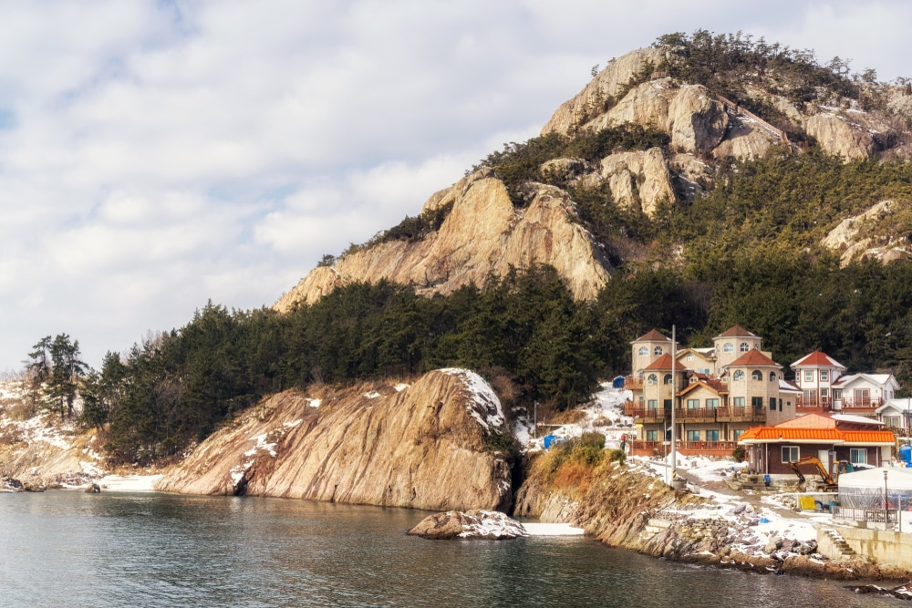

L’île de Seonyudo

Réputée pour ses vues spectaculaires, l’île offre un cadre paisible loin de l’agitation urbaine. Elle vous propose des couchers de soleil incroyables depuis le sommet de la colline Mangjubong.